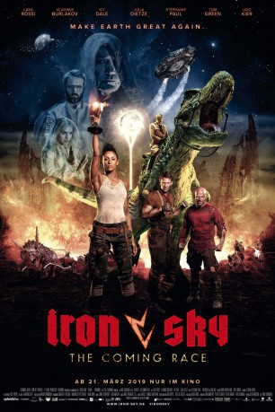

#11883 Iron Sky: The Coming Race
 
 IMDB-Wertung: 5.0 / 10
IMDB-Wertung: 5.0 / 10  Tomatometer: 29
Tomatometer: 29  Metascore: 0
Metascore: 0 
Die Nazi-Attacke von der dunklen Seite des Mondes aus wurde in Iron Sky noch erfolgreich abgewehrt. Führer-Nachfolger Wolfgang Kortzfleisch mag zwar eine Schlacht verloren haben, aber sein Siegeswillen ist ungebrochen, der Glaube an die Herrenrasse von Outer Space da. Doch momentan ist er auf der Flucht – sein Ziel: Zurück auf den Mond, Wunden lecken, Mund abputzen und in eine neue Runde fürs Vierte Reich.
Jahr: 2019
Dauer: 92 Minuten
FSK: 12
Land: Finnland Studio: Splendid FilmTonspuren: DTS - ,
Untertitel: Deutsch,
Auflösung: 1080p (1920x804) Größe: 7813 MB
Genre: Action, Sci-Fi, Komödie, Abenteuer
Regisseur: Timo Vuorensola
Drehbuch: Dalan Musson, Jarmo Puskala, Johanna Sinisalo, Samuli Torssonen, Timo Vuorensola
Soundtrack: Tuomas Kantelinen, Laibach
Darsteller:
- Lara Rossi als Obianaju 'Obi' Washington
 Vladimir Burlakov als Sasha
Vladimir Burlakov als Sasha Julia Dietze als Renate Richter
Julia Dietze als Renate Richter- Stephanie Paul als Vril President
- Tom Green als Donald
 Udo Kier als Vril Wolfgang Kortzfleisch / Vril Adolf Hitler
Udo Kier als Vril Wolfgang Kortzfleisch / Vril Adolf Hitler- John Flanders als Gary the Base Commander
- James Quinn als Deputy Commander Johan
- Emily Atack als Tyler
- Pierce Nathan-Calvin Baechler als Altar Boy
- Christoph Drobig als Guilty Jobsist
- Muya Lubambu Tshinioka als Vril Idi Amin
- Abbas Shirafkan als Vril Osama bin Laden
- Kari Ketonen als Vril Vladimir Putin
 Hon Ping Tang als Vril Genghis Khan
Hon Ping Tang als Vril Genghis Khan- Guido Baechler als Moonbase Trooper (uncredited)
- Jan Debski als Comptroller (uncredited)
- Nick Ford als Reptilian Hunting Party (uncredited)
- Anabel Lopez als Director of Paperwork (uncredited)
 Andrew Morgado als Creatures (uncredited)
Andrew Morgado als Creatures (uncredited)- Gabriel Soler als Jobsist (uncredited)
- Klemens Niklaus Trenkle als Moonbase Trooper (uncredited)
- Yakup Uzun als Moonbase Trooper (uncredited)
- Ann-Sophie Vanlommel als Jobsist (uncredited)
- Timo Vuorensola als Tall Finn (uncredited)
 Ricky Watson als Steve Petersen (uncredited)
Ricky Watson als Steve Petersen (uncredited)- Kit Dale als Malcom
 Martin Swabey als Ryan
Martin Swabey als Ryan- Edward Judge als Fat Tyler
- Kari Berg als Lena the Jobsist
- Victor Au als Vril Officer
- Vasco De Beukelaer als Vril Chairman
- Antoine Plaisant als Vril Mark Zuckerberg
- Amanda Wolzak als Vril Margaret Thatcher
- Francesco Italiano als Vril Caligula
- Duta Skhirtladze als Vril Joseph Stalin
- Jukka Hilden als Vril Pope Urban II
- Lloyd Li als Vril Kim Jong-Un
- Tero Kaukomaa als Vril Urho Kekkonen
- Gaëtan Wenders als Vril Steve Jobs
- Alexander Moens als Vril Temple Guard
- Dennis Matthias als Evil Reptilian
- Graham Tyson als Fan Producer
- Erik Augustin als Moonbase Citizen (uncredited)
- Julian Cordes als Moonbase Trooper (uncredited)
- Michel den Hartog als Jobsist (uncredited)
- Vincent Eaton als Moonbase Citizen (uncredited)
- Allard Geerlings als Moonbase Trooper (uncredited)
- Jussi Pekka Kasurinen als Moonbase Citizen (uncredited)
- Martin Kesper als Moonbase Citizen (uncredited)
Datei: X:\2-Dilogie(G-M)\Iron Sky\Iron Sky The Coming Race (2019, FSK12, 1920x804).mkv seit 02.10.2019
Festplatte: HD Collection-2(A-Z)-3(A-M)
 Alle Filme aus Gruppe '2-Dilogie(G-M)\Iron Sky'
Alle Filme aus Gruppe '2-Dilogie(G-M)\Iron Sky'